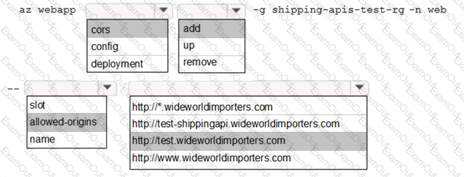
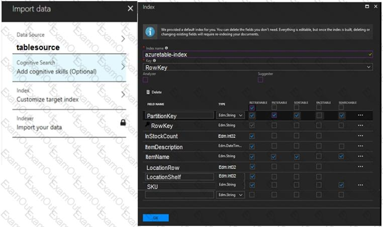
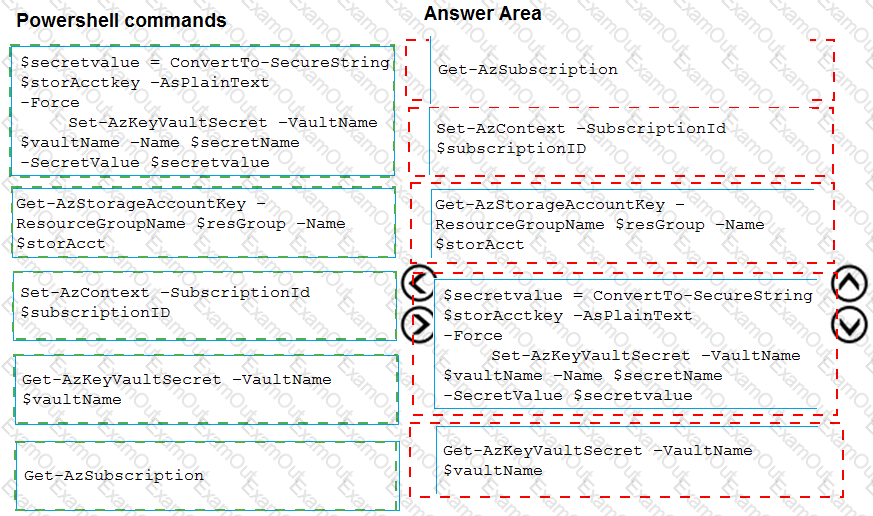

Microsoft - AZ-204
Exam Topic Breakdown
Exam Topic
Number of Questions
Topic 1 : Windows Server 2016 virtual machine
10
Topic 2 : ContentAnalysisService
7
Topic 3 : Misc. Questions
125
TOTAL
142
1 of 272


Microsoft - AZ-204
Topic 1, Windows Server 2016 virtual machine
Case study
This is a case study. Case studies are not timed separately. You can use as much exam time as you would
like to complete each case. However, there may be additional case studies and sections on this exam. You
must manage your time to ensure that you are able to complete all questions included on this exam in the time
provided.
To answer the questions included in a case study, you will need to reference information that is provided in the
case study. Case studies might contain exhibits and other resources that provide more information about the
scenario that is described in the case study. Each question is independent of the other questions in this case
study.
At the end of this case study, a review screen will appear. This screen allows you to review your answers and
to make changes before you move to the next section of the exam. After you begin a new section, you cannot
return to this section.
To start the case study
To display the first question in this case study, click the Next button. Use the buttons in the left pane to
explore the content of the case study before you answer the questions. Clicking these buttons displays
information such as business requirements, existing environment, and problem statements. If the case study
has an All Information tab, note that the information displayed is identical to the information displayed on the
subsequent tabs. When you are ready to answer a question, click the Question button to return to the question.
Current environment
Windows Server 2016 virtual machine
The virtual machine (VM) runs BizTalk Server 2016. The VM runs the following workflows:
Ocean Transport – This workflow gathers and validates container information including container
contents and arrival notices at various shipping ports.
Inland Transport – This workflow gathers and validates trucking information including fuel usage,
number of stops, and routes.
The VM supports the following REST API calls:
Container API – This API provides container information including weight, contents, and other
attributes.
Location API – This API provides location information regarding shipping ports of call and tracking
stops.
Shipping REST API – This API provides shipping information for use and display on the shipping
website.
2 of 272


Microsoft - AZ-204
Shipping Data
The application uses MongoDB JSON document storage database for all container and transport information.
Shipping Web Site
The
site displays shipping container tracking information and container contents. The site is located at
http://shipping.wideworldimporters.com/
Proposed solution
The on-premises shipping application must be moved to Azure. The VM has been migrated to a new
Standard_D16s_v3 Azure VM by using Azure Site Recovery and must remain running in Azure to complete
the BizTalk component migrations. You create a Standard_D16s_v3 Azure VM to host BizTalk Server. The
Azure architecture diagram for the proposed solution is shown below:
Requirements
Shipping Logic app
The Shipping Logic app must meet the following requirements:
Support the ocean transport and inland transport workflows by using a Logic App.
Support industry-standard protocol X12 message format for various messages including vessel content
details and arrival notices.
Secure resources to the corporate VNet and use dedicated storage resources with a fixed costing model.
Maintain on-premises connectivity to support legacy applications and final BizTalk migrations.
Shipping Function app
3 of 272


Microsoft - AZ-204
Implement secure function endpoints by using app-level security and include Azure Active Directory (Azure
AD).
REST APIs
The REST API’s that support the solution must meet the following requirements:
Secure resources to the corporate VNet.
Allow deployment to a testing location within Azure while not incurring additional costs.
Automatically scale to double capacity during peak shipping times while not causing application
downtime.
Minimize costs when selecting an Azure payment model.
Shipping data
Data migration from on-premises to Azure must minimize costs and downtime.
Shipping website
Use Azure Content Delivery Network (CDN) and ensure maximum performance for dynamic content while
minimizing latency and costs.
Issues
Windows Server 2016 VM
The VM shows high network latency, jitter, and high CPU utilization. The VM is critical and has not been
backed up in the past. The VM must enable a quick restore from a 7-day snapshot to include in-place restore of
disks in case of failure.
Shipping website and REST APIs
The following error message displays while you are testing the website:
Failed
to load http://test-shippingapi.wideworldimporters.com/: No
'Access-Control-Allow-Origin' header is present on the requested resource. Origin '
http://test.wideworldimporters.com/' is therefore not allowed access.
Question #:1 - (Exam Topic 1)
You need to secure the Shipping Logic App.
What should you use?
A.
4 of 272

Microsoft - AZ-204
A. Azure App Service Environment (ASE)
B. Azure AD B2B integration
C. Integration Service Environment (ISE)
D. VNet service endpoint
Answer: C
Explanation
Scenario: The Shipping Logic App requires secure resources to the corporate VNet and use dedicated storage
resources with a fixed costing model.
You can access to Azure Virtual Network resources from Azure Logic Apps by using integration service
environments (ISEs).
Sometimes, your logic apps and integration accounts need access to secured resources, such as virtual
machines (VMs) and other systems or services, that are inside an Azure virtual network. To set up this access,
you can create an integration service environment (ISE) where you can run your logic apps and create your
integration accounts.
References:
https://docs.microsoft.com/en-us/azure/logic-apps/connect-virtual-network-vnet-isolated-environment-overview
Question #:2 - (Exam Topic 1)
You need to secure the Shipping Function app.
How should you configure the app? To answer, select the appropriate options in the answer area.
NOTE: Each correct selection is worth one point.
5 of 272

Microsoft - AZ-204
Answer:
6 of 272

Microsoft - AZ-204
Explanation
7 of 272

Microsoft - AZ-204
Scenario: Shipping Function app: Implement secure function endpoints by using app-level security and include
Azure Active Directory (Azure AD).
Box 1: Function
Box 2: JSON based Token (JWT)
Azure AD uses JSON based tokens (JWTs) that contain claims
Box 3: HTTP
How a web app delegates sign-in to Azure AD and obtains a token
User authentication happens via the browser. The OpenID protocol uses standard HTTP protocol messages.
References:
https://docs.microsoft.com/en-us/azure/active-directory/develop/authentication-scenarios
8 of 272

Microsoft - AZ-204
Question #:3 - (Exam Topic 1)
You need to configure Azure App Service to support the REST API requirements.
Which values should you use? To answer, select the appropriate options in the answer area.
NOTE: Each correct selection is worth one point.
Answer:
9 of 272

Microsoft - AZ-204
Explanation
Plan: Standard
Standard support auto-scaling
10 of 272


Microsoft - AZ-204
Instance Count: 10
Max instances for standard is 10.
Scenario:
The REST API’s that support the solution must meet the following requirements:
Allow deployment to a testing location within Azure while not incurring additional costs.
Automatically scale to double capacity during peak shipping times while not causing application
downtime.
Minimize costs when selecting an Azure payment model.
References:
https://azure.microsoft.com/en-us/pricing/details/app-service/plans/
Question #:4 - (Exam Topic 1)
You need to configure Azure CDN for the Shipping web site.
Which configuration options should you use? To answer, select the appropriate options in the answer area.
NOTE: Each correct selection is worth one point.
11 of 272

Microsoft - AZ-204
Answer:
12 of 272

Microsoft - AZ-204
Explanation
Scenario: Shipping website
Use Azure Content Delivery Network (CDN) and ensure maximum performance for dynamic content while
minimizing latency and costs.
Tier: Standard
Profile: Akamai
Optimization: Dynamic site acceleration
Dynamic site acceleration (DSA) is available for Azure CDN Standard from Akamai, Azure CDN Standard
from Verizon, and Azure CDN Premium from Verizon profiles.
DSA includes various techniques that benefit the latency and performance of dynamic content. Techniques
include route and network optimization, TCP optimization, and more.
You can use this optimization to accelerate a web app that includes numerous responses that aren't cacheable.
Examples are search results, checkout transactions, or real-time data. You can continue to use core Azure
CDN caching capabilities for static data.
13 of 272

Microsoft - AZ-204
Reference:
https://docs.microsoft.com/en-us/azure/cdn/cdn-optimization-overview
Question #:5 - (Exam Topic 1)
You need to update the APIs to resolve the testing error.
How should you complete the Azure CLI command? To answer, select the appropriate options in the answer
area.
NOTE: Each correct selection is worth one point.
Answer:
14 of 272


Microsoft - AZ-204
Explanation
Enable Cross-Origin Resource Sharing (CORS) on your Azure App Service Web App.
Enter the full URL of the site you want to allow to access your WEB API or * to allow all domains.
Box 1: cors
15 of 272

Microsoft - AZ-204
Box 2: add
Box 3: allowed-origins
Box
4: http://testwideworldimporters.com/
References:
http://donovanbrown.com/post/How-to-clear-No-Access-Control-Allow-Origin-header-error-wit
h-Azure-App-Service
Question #:6 - (Exam Topic 1)
You need to migrate on-premises shipping data to Azure.
What should you use?
A. Azure Migrate
B. Azure Cosmos DB Data Migration tool (dt.exe)
C. AzCopy
D. Azure Database Migration service
Answer: D
Explanation
Migrate from on-premises or cloud implementations of MongoDB to Azure Cosmos DB with minimal
downtime by using Azure Database Migration Service. Perform resilient migrations of MongoDB data at scale
and with high reliability.
Scenario: Data migration from on-premises to Azure must minimize costs and downtime.
The application uses MongoDB JSON document storage database for all container and transport information.
References:
https://azure.microsoft.com/en-us/updates/mongodb-to-azure-cosmos-db-online-and-offline-migrations-are-now-available/
Question #:7 - (Exam Topic 1)
You need to resolve the Shipping web site error.
How should you configre the Azure Table Storage service? To answer, select the appropriate options in the
answer area.
16 of 272

Microsoft - AZ-204
NOTE: Each correct selection is worth one point.
Answer:
Explanation
17 of 272

Microsoft - AZ-204
Box 1: AllowedOrigins
A CORS request will fail if Access-Control-Allow-Origin is missing.
Scenario:
The following error message displays while you are testing the website:
Box
2: http://test-shippingapi.wideworldimporters.com
Syntax: Access-Control-Allow-Origin: *
Access-Control-Allow-Origin: <origin>
Access-Control-Allow-Origin: null
<origin> Specifies an origin. Only a single origin can be specified.
18 of 272

Microsoft - AZ-204
Box 3: AllowedOrigins
Box 4: POST
The only allowed methods are GET, HEAD, and POST. In this case POST is used.
"<Corsrule>" "allowedmethods" Failed to load no "Access-control-Origin" header is present
References:
https://developer.mozilla.org/en-US/docs/Web/HTTP/Headers/Access-Control-Allow-Origin
Question #:8 - (Exam Topic 1)
You need to support the message processing for the ocean transport workflow.
Which four actions should you perform in sequence? To answer, move the appropriate actions from the list of
actions to the answer area and arrange them in the correct order.
Answer:
19 of 272

Microsoft - AZ-204
Explanation
Step 1: Create an integration account in the Azure portal
You can define custom metadata for artifacts in integration accounts and get that metadata during runtime for
your logic app to use. For example, you can provide metadata for artifacts, such as partners, agreements,
20 of 272

Microsoft - AZ-204
schemas, and maps - all store metadata using key-value pairs.
Step 2: Link the Logic App to the integration account
A logic app that's linked to the integration account and artifact metadata you want to use.
Step 3: Add partners, schemas, certificates, maps, and agreements
Step 4: Create a custom connector for the Logic App.
References:
https://docs.microsoft.com/bs-latn-ba/azure/logic-apps/logic-apps-enterprise-integration-metadata
Question #:9 - (Exam Topic 1)
You need to correct the VM issues.
Which tools should you use? To answer, select the appropriate options in the answer area.
NOTE: Each correct selection is worth one point.
Answer:
21 of 272

Microsoft - AZ-204
Explanation
Backup and Restore: Azure Backup
Scenario: The VM is critical and has not been backed up in the past. The VM must enable a quick restore from
a 7-day snapshot to include in-place restore of disks in case of failure.
In-Place restore of disks in IaaS VMs is a feature of Azure Backup.
Performance: Accelerated Networking
22 of 272


Microsoft - AZ-204
Scenario: The VM shows high network latency, jitter, and high CPU utilization.
Accelerated networking enables single root I/O virtualization (SR-IOV) to a VM, greatly improving its
networking performance. This high-performance path bypasses the host from the datapath, reducing latency,
jitter, and CPU utilization, for use with the most demanding network workloads on supported VM types.
References:
https://azure.microsoft.com/en-us/blog/an-easy-way-to-bring-back-your-azure-vm-with-in-place-restore/
Question #:10 - (Exam Topic 1)
You need to support the requirements for the Shipping Logic App.
What should you use?
A. Azure Active Directory Application Proxy
B. Point-to-Site (P2S) VPN connection
C. Site-to-Site (S2S) VPN connection
D. On-premises Data Gateway
Answer: D
Explanation
Before you can connect to on-premises data sources from Azure Logic Apps, download and install the
on-premises data gateway on a local computer. The gateway works as a bridge that provides quick data
transfer and encryption between data sources on premises (not in the cloud) and your logic apps.
The gateway supports BizTalk Server 2016.
Note: Microsoft have now fully incorporated the Azure BizTalk Services capabilities into Logic Apps and
Azure App Service Hybrid Connections.
Logic Apps Enterprise Integration pack bring some of the enterprise B2B capabilities like AS2 and X12, EDI
standards support
Scenario: The Shipping Logic app must meet the following requirements:
Support the ocean transport and inland transport workflows by using a Logic App.
Support industry-standard protocol X12 message format for various messages including vessel content
details and arrival notices.
Secure resources to the corporate VNet and use dedicated storage resources with a fixed costing model.
Maintain on-premises connectivity to support legacy applications and final BizTalk migrations.
23 of 272

Microsoft - AZ-204
Reference:
https://docs.microsoft.com/en-us/azure/logic-apps/logic-apps-gateway-install
24 of 272

Microsoft - AZ-204
Topic 2, ContentAnalysisService
Case study
This is a case study. Case studies are not timed separately. You can use as much exam time as you would
like to complete each case. However, there may be additional case studies and sections on this exam. You
must manage your time to ensure that you are able to complete all questions included on this exam in the time
provided.
To answer the questions included in a case study, you will need to reference information that is provided in the
case study. Case studies might contain exhibits and other resources that provide more information about the
scenario that is described in the case study. Each question is independent of the other questions in this case
study.
At the end of this case study, a review screen will appear. This screen allows you to review your answers and
to make changes before you move to the next section of the exam. After you begin a new section, you cannot
return to this section.
To start the case study
To display the first question in this case study, click the Next button. Use the buttons in the left pane to
explore the content of the case study before you answer the questions. Clicking these buttons displays
information such as business requirements, existing environment, and problem statements. If the case study
has an All Information tab, note that the information displayed is identical to the information displayed on the
subsequent tabs. When you are ready to answer a question, click the Question button to return to the question.
Requirements
ContentAnalysisService
The company’s data science group built ContentAnalysisService which accepts user generated content as a
string and returns a probable value for inappropriate content. Any values over a specific threshold must be
reviewed by an employee of Contoso, Ltd.
You must create an Azure Function named CheckUserContent to perform the content checks.
Costs
You must minimize costs for all Azure services.
Manual review
To review content, the user must authenticate to the website portion of the ContentAnalysisService using their
Azure AD credentials. The website is built using React and all pages and API endpoints require authentication.
In order to review content a user must be part of a ContentReviewer role. All completed reviews must include
the reviewer’s email address for auditing purposes.
High availability
25 of 272


Microsoft - AZ-204
All services must run in multiple regions. The failure of any service in a region must not impact overall
application availability.
Monitoring
An alert must be raised if the ContentUploadService uses more than 80 percent of available CPU-cores.
Security
You have the following security requirements:
Any web service accessible over the Internet must be protected from cross site scripting attacks.
All websites and services must use SSL from a valid root certificate authority.
Azure Storage access keys must only be stored in memory and must be available only to the service.
All Internal services must only be accessible from Internal Virtual Networks (VNets)
All parts of the system must support inbound and outbound traffic restrictions.
All service calls must be authenticated by using Azure AD.
User agreements
When a user submits content, they must agree to a user agreement. The agreement allows employees of
Contoso.Ltd to review content, store cookies on user devices and track user’s IP addresses.
Information regarding agreements is used by multiple divisions within Contoso, Ltd.
User responses must not be lost and must be available to all parties regardless of individual service uptime.
The volume of agreements is expected to be in the millions per hour.
Validation testing
When a new version of the ContentAnalysisService is available the previous seven days of content must be
processed with the new version to verify that the new version does not significantly deviate from the old
version.
Issues
Users of the ContentUploadService report that they occasionally see HTTP 502 responses on specific pages.
Code
ContentUploadService
26 of 272

Microsoft - AZ-204
27 of 272

Microsoft - AZ-204
Question #:1 - (Exam Topic 2)
You need to configure the ContentUploadService deployment.
Which two actions should you perform? Each correct answer presents part of the solution.
NOTE: Each correct selection is worth one point.
A. Add the following markup to line CS23:
types: Private
B. Add the following markup to line CS24:
osType: Windows
C. Add the following markup to line CS24:
osType: Linux
D. Add the following markup to line CS23:
types: Public
Answer: A
Explanation
Scenario: All Internal services must only be accessible from Internal Virtual Networks (VNets)
There are three Network Location types – Private, Public and Domain
Reference:
https://devblogs.microsoft.com/powershell/setting-network-location-to-private/
Question #:2 - (Exam Topic 2)
You need to implement the bindings for the CheckUserContent function.
How should you complete the code segment? To answer, select the appropriate options in the answer area.
NOTE: Each correct selection is worth one point.
28 of 272


Microsoft - AZ-204
Answer:
Explanation
29 of 272

Microsoft - AZ-204
Box 1: [BlobTrigger(..)]
Box 2: [Blob(..)]
Azure Blob storage output binding for Azure Functions. The output binding allows you to modify and delete
blob storage data in an Azure Function.
The attribute's constructor takes the path to the blob and a FileAccess parameter indicating read or write, as
shown in the following example:
[FunctionName("ResizeImage")]
public static void Run(
[BlobTrigger("sample-images/{name}")] Stream image,
[Blob("sample-images-md/{name}", FileAccess.Write)] Stream imageSmall)
{
}
Scenario: You must create an Azure Function named CheckUserContent to perform the content checks.
The company’s data science group built ContentAnalysisService which accepts user generated content as a
string and returns a probable value for inappropriate content. Any values over a specific threshold must be
30 of 272


Microsoft - AZ-204
reviewed by an employee of Contoso, Ltd.
Reference:
https://docs.microsoft.com/en-us/azure/azure-functions/functions-bindings-storage-blob-output
Question #:3 - (Exam Topic 2)
You need to store the user agreements.
Where should you store the agreement after it is completed?
A. Azure Storage queue
B. Azure Event Hub
C. Azure Service Bus topic
D. Azure Event Grid topic
Answer: B
Explanation
Azure Event Hub is used for telemetry and distributed data streaming.
This service provides a single solution that enables rapid data retrieval for real-time processing as well as
repeated replay of stored raw data. It can capture the streaming data into a file for processing and analysis.
It has the following characteristics:
low latency
capable of receiving and processing millions of events per second
at least once delivery
Reference:
https://docs.microsoft.com/en-us/azure/event-grid/compare-messaging-services
Question #:4 - (Exam Topic 2)
You need to add code at line AM09 to ensure that users can review content using ContentAnalysisService.
How should you complete the code? To answer, select the appropriate options in the answer area.
NOTE: Each correct selection is worth one point.
31 of 272


Microsoft - AZ-204
Answer:
Explanation
32 of 272

Microsoft - AZ-204
Box 1: "oauth2Permissions": ["login"]
oauth2Permissions specifies the collection of OAuth 2.0 permission scopes that the web API (resource) app
exposes to client apps. These permission scopes may be granted to client apps during consent.
Box 2: "oauth2AllowImplicitFlow":true
For applications (Angular, Ember.js, React.js, and so on), Microsoft identity platform supports the OAuth 2.0
Implicit Grant flow.
Reference:
https://docs.microsoft.com/en-us/azure/active-directory/develop/reference-app-manifest
Question #:5 - (Exam Topic 2)
You need to ensure that network security policies are met.
How should you configure network security? To answer, select the appropriate options in the answer area.
NOTE: Each correct selection is worth one point.
33 of 272


Microsoft - AZ-204
Answer:
Explanation
34 of 272


Microsoft - AZ-204
Box 1: Valid root certificate
Scenario: All websites and services must use SSL from a valid root certificate authority.
Box 2: Azure Application Gateway
Scenario:
Any web service accessible over the Internet must be protected from cross site scripting attacks.
All Internal services must only be accessible from Internal Virtual Networks (VNets)
All parts of the system must support inbound and outbound traffic restrictions.
Azure Web Application Firewall (WAF) on Azure Application Gateway provides centralized protection of
your web applications from common exploits and vulnerabilities. Web applications are increasingly targeted
by malicious attacks that exploit commonly known vulnerabilities. SQL injection and cross-site scripting are
among the most common attacks.
Application Gateway supports autoscaling, SSL offloading, and end-to-end SSL, a web application firewall
(WAF), cookie-based session affinity, URL path-based routing, multisite hosting, redirection, rewrite HTTP
headers and other features.
Note: Both Nginx and Azure Application Gateway act as a reverse proxy with Layer 7 loadbalancing features
plus a WAF to ensure strong protection against common web vulnerabilities and exploits.
You can modify Nginx web server configuration/SSL for X-XSS protection. This helps to prevent cross-site
scripting exploits by forcing the injection of HTTP headers with X-XSS protection.
Reference:
https://docs.microsoft.com/en-us/azure/web-application-firewall/ag/ag-overview
35 of 272

Microsoft - AZ-204
https://www.upguard.com/articles/10-tips-for-securing-your-nginx-deployment
Question #:6 - (Exam Topic 2)
You need to monitor ContentUploadService accourding to the requirements.
Which command should you use?
A. az monitor metrics alert create –n alert –g … - -scopes … - -condition "avg
Percentage CPU > 8"
B. az monitor metrics alert create –n alert –g … - -scopes … - -condition "avg
Percentage CPU > 800"
C. az monitor metrics alert create –n alert –g … - -scopes … - -condition "CPU
Usage > 800"
D. az monitor metrics alert create –n alert –g … - -scopes … - -condition "CPU
Usage > 8"
Answer: B
Explanation
Scenario: An alert must be raised if the ContentUploadService uses more than 80 percent of available
CPU-cores
Reference:
https://docs.microsoft.com/sv-se/cli/azure/monitor/metrics/alert
Question #:7 - (Exam Topic 2)
You need to add markup at line AM04 to implement the ContentReview role.
How should you complete the markup? To answer, drag the appropriate json segments to the correct locations.
Each json segment may be used once, more than once, or not at all. You may need to drag the split bar
between panes or scroll to view content.
NOTE: Each correct selection is worth one point.
36 of 272


Microsoft - AZ-204
Answer:
Explanation
37 of 272

Microsoft - AZ-204
Box 1: allowedMemberTypes
allowedMemberTypes specifies whether this app role definition can be assigned to users and groups by setting
to "User", or to other applications (that are accessing this application in daemon service scenarios) by setting
to "Application", or to both.
Note: The following example shows the appRoles that you can assign to users.
"appId": "8763f1c4-f988-489c-a51e-158e9ef97d6a",
"appRoles": [
{
"allowedMemberTypes": [
"User"
],
"displayName": "Writer",
"id": "d1c2ade8-98f8-45fd-aa4a-6d06b947c66f",
"isEnabled": true,
"description": "Writers Have the ability to create tasks.",
"value": "Writer"
}
38 of 272

Microsoft - AZ-204
],
"availableToOtherTenants": false,
Box 2: User
Scenario: In order to review content a user must be part of a ContentReviewer role.
Box 3: value
value specifies the value which will be included in the roles claim in authentication and access tokens.
Reference:
https://docs.microsoft.com/en-us/graph/api/resources/approle
39 of 272

Microsoft - AZ-204
Topic 3, Misc. Questions
Question #:1 - (Exam Topic 3)
You develop a website. You plan to host the website in Azure. You expect the website to experience high
traffic volumes after it is published. You must ensure that the website remains available and responsive while
minimizing cost. You need to deploy the website. What should you do?
A. Deploy the website to an App Service that uses the Shared service tier. Configure the App Service plan
to automatically scale when the CPU load is high.
B. Deploy the website to a virtual machine. Configure the virtual machine to automatically scale when the
CPU load is high.
C. Deploy the website to an App Service that uses the Standard service tier. Configure the App Service
plan to automatically scale when the CPU load is high.
D. Deploy the website to a virtual machine. Configure a Scale Set to increase the virtual machine instance
count when the CPU load
Answer: C
Explanation
Windows Azure Web Sites (WAWS) offers 3 modes: Standard, Free, and Shared.
Standard mode carries an enterprise-grade SLA (Service Level Agreement) of 99.9% monthly, even for sites
with just one instance.
Standard mode runs on dedicated instances, making it different from the other ways to buy Windows Azure
Web Sites.
Question #:2 - (Exam Topic 3)
A company is implementing a publish-subscribe (Pub/Sub) messaging component by using Azure Service
Bus. You are developing the first subscription application.
In the Azure portal you see that messages are being sent to the subscription for each topic. You create and
initialize a subscription client object by supplying the correct details, but the subscription application is still
not consuming the messages.
You need to complete the source code of the subscription client
What should you do?
A. await subscriptionClient.CloseAsync();
B. await subscriptionClient.AddRuleAsync(new RuleDescription(RuleDescription.DefaultRuleName, new
40 of 272

Microsoft - AZ-204
B.
TrueFilter()));
C. subscriptionClient.RegisterMessageHandler(ProcessMessagesAsync, messageHandlerOptions);
D. subscriptionClient = new SubscriptionClient(ServiceBusConnectionString, TopicName,
SubscriptionName);
Answer: C
Explanation
Using topic client, call RegisterMessageHandler which is used to receive messages continuously from the
entity. It registers a message handler and begins a new thread to receive messages. This handler is waited on
every time a new message is received by the receiver.
subscriptionClient.RegisterMessageHandler(ReceiveMessagesAsync, messageHandlerOptions);
References:
https://www.c-sharpcorner.com/article/azure-service-bus-topic-and-subscription-pub-sub/
Question #:3 - (Exam Topic 3)
You develop a serverless application using several Azure Functions. These functions connect to data from
within the code.
You want to configure tracing for an Azure Function App project.
You need to change configuration settings in the hostjson file.
Which tool should you use?
A. Azure portal
B. Azure PowerShell
C. Azure Functions Core Tools (Azure CLI)
D. Visual Studio
Answer: A
Explanation
The function editor built into the Azure portal lets you update the function.json file and the code file for a
function. The host.json file, which contains some runtime-specific configurations, is in the root folder of the
function app.
References:
41 of 272

Microsoft - AZ-204
https://docs.microsoft.com/en-us/azure/azure-functions/functions-reference#fileupdate
Question #:4 - (Exam Topic 3)
You are writing code to create and run an Azure Batch job.
You have created a pool of compute nodes.
You need to choose the right class and its method to submit a batch job to the Batch service.
Which method should you use?
A. JobOperations.CreateJobO
B. CloudJob.Enable(IEnumerable<BatchClientBehavior>)
C. CloudJob.CommitAsync(IEnumerable<BatchClientBehavior>, CancellationToken)
D. JobOperations.EnableJob(String, IEnumerable<BatchClientBehavior>)
E. JobOperations.EnableJobAsync(String. IEnumerable<BatchClientBehavior>. CancellationToken)
Answer: C
Explanation
A Batch job is a logical grouping of one or more tasks. A job includes settings common to the tasks, such as
priority and the pool to run tasks on. The app uses the BatchClient.JobOperations.CreateJob method to create a
job on your pool.
The Commit method submits the job to the Batch service. Initially the job has no tasks.
{
CloudJob job = batchClient.JobOperations.CreateJob();
job.Id = JobId;
job.PoolInformation = new PoolInformation { PoolId = PoolId };
job.Commit();
}
References:
https://docs.microsoft.com/en-us/azure/batch/quick-run-dotnet
Question #:5 - (Exam Topic 3)
42 of 272

Microsoft - AZ-204
Your company has several websites that use a company logo image. You use Azure Content Delivery Network
(CDN) to store the static image.
You need to determine the correct process of how the CDN and the Point of Presence (POP) server will
distribute the image and list the items in the correct order.
In which order do the actions occur? To answer, move all actions from the list of actions to the answer area
and arrange them in the correct order.
Answer:
43 of 272


Microsoft - AZ-204
Explanation
Step 1: A user requests the image..
A user requests a file (also called an asset) by using a URL with a special domain name, such as <endpoint
name>.azureedge.net. This name can be an endpoint hostname or a custom domain. The DNS routes the
request to the best performing POP location, which is usually the POP that is geographically closest to the
user.
44 of 272

Microsoft - AZ-204
Step 2: If no edge servers in the POP have the..
If no edge servers in the POP have the file in their cache, the POP requests the file from the origin server. The
origin server can be an Azure Web App, Azure Cloud Service, Azure Storage account, or any publicly
accessible web server.
Step 3: The origin server returns the..
The origin server returns the file to an edge server in the POP.
An edge server in the POP caches the file and returns the file to the original requestor (Alice). The file remains
cached on the edge server in the POP until the time-to-live (TTL) specified by its HTTP headers expires. If the
origin server didn't specify a TTL, the default TTL is seven days.
Step 4: Subsequent requests for..
Additional users can then request the same file by using the same URL that the original user used, and can also
be directed to the same POP.
If the TTL for the file hasn't expired, the POP edge server returns the file directly from the cache. This process
results in a faster, more responsive user experience.
References:
https://docs.microsoft.com/en-us/azure/cdn/cdn-overview
Question #:6 - (Exam Topic 3)
You are developing an ASP.NET Core Web API web service. The web service uses Azure Application
Insights for all telemetry and dependency tracking. The web service reads and writes data to a database other
than Microsoft SQL Server.
You need to ensure that dependency tracking works for calls to the third-party database.
Which two Dependency Telemetry properties should you store in the database? Each correct answer presents
part of the solution.
NOTE: Each correct selection is worth one point.
A. Telemetry.Context.Operation.Id
B. Tetemetry.Context.Cloud.Rolelnstance
C. Telemetry.Id
D. Telemetry.ContextSession.Id
E. Telemetry.Name
Answer: A C
45 of 272

Microsoft - AZ-204
Explanation
References:
https://docs.microsoft.com/en-us/azure/azure-monitor/app/custom-operations-tracking
Question #:7 - (Exam Topic 3)
Note: This question is part of a series of questions that present the same scenario. Each question in the series
contains a unique solution that might meet the stated goals. Some question sets might have more than one
correct solution, while others might not have a correct solution.
After you answer a question in this section, you will NOT be able to return to it. As a result, these questions
will not appear in the review screen.
Margie’s Travel is an international travel and bookings management service. The company is expanding into
restaurant bookings. You are tasked with implementing Azure Search for the restaurants listed in their solution
You create the index in Azure Search.
You need to import the restaurant data into the Azure Search service by using the Azure Search NET SDK.
Solution:
1 Create a SearchlndexClient object to connect to the search index
2. Create an IndexBatch that contains the documents which must be added.
3. Call the Documents.Index method of the SearchIndexClient and pass the IndexBatch.
.
Does the solution meet the goal?
A. Yes
B. No
Answer: A
Explanation
1. The index needs to be populated. To do this, we will need a SearchIndexClient. There are two ways to
obtain one: by constructing it, or by calling Indexes.GetClient on the SearchServiceClient. Here we will use
the first method.
2. Create the indexBatch with the documents
Something like:
46 of 272

Microsoft - AZ-204
var hotels = new Hotel[];
{
new Hotel()
{
HotelId = "3",
BaseRate = 129.99,
Description = "Close to town hall and the river"
}
};
…
var batch = IndexBatch.Upload(hotels);
3. The next step is to populate the newly-created index
Example:
var batch = IndexBatch.Upload(hotels);
try
{
indexClient.Documents.Index(batch);
}
References:
https://docs.microsoft.com/en-us/azure/search/search-howto-dotnet-sdk
Question #:8 - (Exam Topic 3)
You develop Azure solutions.
You must connect to a No-SQL globally-distributed database by using the .NET API.
You need to create an object to configure and execute requests in the database.
Which code segment should you use?
47 of 272

Microsoft - AZ-204
A. new Container(EndpointUri, PrimaryKey);
B. new Database(Endpoint, PrimaryKey);
C. new CosmosClient(EndpointUri, PrimaryKey);
Answer: C
Explanation
Example:
// Create a new instance of the Cosmos Client
this.cosmosClient = new CosmosClient(EndpointUri, PrimaryKey)
//ADD THIS PART TO YOUR CODE
await this.CreateDatabaseAsync();
Reference:
https://docs.microsoft.com/en-us/azure/cosmos-db/sql-api-get-started
Question #:9 - (Exam Topic 3)
You are implementing an order processing system. A point of sale application publishes orders to topics in an
Azure Service Bus queue. The label property for the topic includes the following data:
The system has the following requirements for subscriptions
48 of 272

Microsoft - AZ-204
You need to implement filtering and maximize throughput while evaluating filters.
Which filter types should you implement? To answer, drag the appropriate filter types to the correct
subscriptions. Each filter type may be used once, more than once, or not at all. You may need to drag the split
bar between panes or scroll to view content.
NOTE: Each correct selection is worth one point.
Answer:
49 of 272


Microsoft - AZ-204
Explanation
FutureOrders: SQLFilter
HighPriortyOrders: CorrelationFilter
CorrelationID only
InternationalOrders: SQLFilter
Country NOT USA requires an SQL Filter
50 of 272

Microsoft - AZ-204
HighQuantityOrders: SQLFilter
Need to use relational operators so an SQL Filter is needed.
AllOrders: No Filter
SQL Filter: SQL Filters - A SqlFilter holds a SQL-like conditional expression that is evaluated in the broker
against the arriving messages' user-defined properties and system properties. All system properties must be
prefixed with sys. in the conditional expression. The SQL-language subset for filter conditions tests for the
existence of properties (EXISTS), as well as for null-values (IS NULL), logical NOT/AND/OR, relational
operators, simple numeric arithmetic, and simple text pattern matching with LIKE.
Correlation Filters - A CorrelationFilter holds a set of conditions that are matched against one or more of an
arriving message's user and system properties. A common use is to match against the CorrelationId property,
but the application can also choose to match against ContentType, Label, MessageId, ReplyTo,
ReplyToSessionId, SessionId, To, and any user-defined properties. A match exists when an arriving message's
value for a property is equal to the value specified in the correlation filter. For string expressions, the
comparison is case-sensitive. When specifying multiple match properties, the filter combines them as a logical
AND condition, meaning for the filter to match, all conditions must match.
Boolean filters - The TrueFilter and FalseFilter either cause all arriving messages (true) or none of the arriving
messages (false) to be selected for the subscription.
References:
https://docs.microsoft.com/en-us/azure/service-bus-messaging/topic-filters
Question #:10 - (Exam Topic 3)
Note: This question is part of a series of questions that present the same scenario. Each question in the series
contains a unique solution. Determine whether the solution meets the stated goals.
You are developing and deploying several ASP.Net web applications to Azure App Service. You plan to save
session state information and HTML output. You must use a storage mechanism with the following
requirements:
•Share session state across all ASP.NET web applications
•Support controlled, concurrent access to the same session state data for multiple readers and a single writer
•Save full HTTP responses for concurrent requests
You need to store the information.
Proposed Solution: Add the web applications to Docker containers. Deploy the containers. Deploy the
containers to Azure Kubernetes Service (AKS).
Does the solution meet the goal?
A. Yes
51 of 272


Microsoft - AZ-204
B. No
Answer: B
Explanation
Instead use Azure Cache for Redis.
Note: Azure Cache for Redis provides a session state provider that you can use to store your session state
in-memory with Azure Cache for Redis instead of a SQL Server database. To use the caching session state
provider, first configure your cache, and then configure your ASP.NET application for cache using the Azure
Cache for Redis Session State NuGet package.
References:
https://docs.microsoft.com/en-us/azure/azure-cache-for-redis/cache-aspnet-session-state-provider
Question #:11 - (Exam Topic 3)
You are validating the configuration of an Azure Search indexer.
The service has been configured with an indexer that uses the Import Data option. The index is configured
using options as shown in the Index Configuration exhibit. (Click the Index Configuration tab.)
52 of 272

Microsoft - AZ-204
You use an Azure table as the data source for the import operation. The table contains three records with item
inventory data that matches the fields in the Storage data exhibit. These records were imported when the index
was created. (Click the Storage Data tab.) When users search with no filter, all three records are displayed.
When users search for items by description, Search explorer returns no records. The Search Explorer exhibit
shows the query and results for a test. In the test, a user is trying to search for all items in the table that have a
description that contains the word bag. (Click the Search Explorer tab.)
You need to resolve the issue.
For each of the following statements, select Yes if the statement is true. Otherwise, select No.
NOTE: Each correct selection is worth one point.
Answer:
53 of 272

Microsoft - AZ-204
Explanation
Box 1: Yes
The ItemDescription field in not searchable.
Box 2: No
The ItemDescription field in not searchable, but we would need to recreate the index.
Box 3: Yes
An indexer in Azure Search is a crawler that extracts searchable data and metadata from an external Azure
data source and populates an index based on field-to-field mappings between the index and your data source.
This approach is sometimes referred to as a 'pull model' because the service pulls data in without you having to
write any code that adds data to an index.
Box 4: No
References:
https://docs.microsoft.com/en-us/azure/search/search-what-is-an-index
https://docs.microsoft.com/en-us/azure/search/search-indexer-overview
54 of 272

Microsoft - AZ-204
Question #:12 - (Exam Topic 3)
You are developing an Azure Web App. You configure TLS mutual authentication for the web app.
You need to validate the client certificate in the web app. To answer, select the appropriate options in the
answer area.
NOTE: Each correct selection is worth one point.
Answer:
55 of 272


Microsoft - AZ-204
Explanation
Accessing the client certificate from App Service.
If you are using ASP.NET and configure your app to use client certificate authentication, the certificate will be
56 of 272

Microsoft - AZ-204
available through the HttpRequest.ClientCertificate property. For other application stacks, the client cert will
be available in your app through a base64 encoded value in the "X-ARR-ClientCert" request header. Your
application can create a certificate from this value and then use it for authentication and authorization purposes
in your application.
References:
https://docs.microsoft.com/en-us/azure/app-service/app-service-web-configure-tls-mutual-auth
Question #:13 - (Exam Topic 3)
You are implementing an Azure API app that uses built-in authentication and authorization functionality.
All app actions must be associated with information about the current user.
You need to retrieve the information about the current user.
What are two possible ways to achieve the goal? Each correct answer presents a complete solution.
NOTE: Each correct selection is worth one point.
A. HTTP headers
B. environment variables
C. /.auth/me HTTP endpoint
D. /.auth/login endpoint
Answer: A C
Explanation
A: After App Service Authentication has been configured, users trying to access your API are prompted to
sign in with their organizational account that belongs to the same Azure AD as the Azure AD application used
to secure the API. After signing in, you are able to access the information about the current user through the
HttpContext.Current.User property.
C: While the server code has access to request headers, client code can access GET /.auth/me to get the same
access tokens (
References:
https://docs.microsoft.com/en-us/azure/app-service/app-service-web-tutorial-auth-aad
https://docs.microsoft.com/en-us/sharepoint/dev/spfx/web-parts/guidance/connect-to-api-secured-with-aad
Question #:14 - (Exam Topic 3)
57 of 272


Microsoft - AZ-204
You plan to create a Docker image that runs as ASP.NET Core application named ContosoApp. You have a
setup script named setupScript.ps1 and a series of application files including ContosoApp.dll.
You need to create a Dockerfile document that meets the following requirements:
•Call setupScript.ps1 when the container is built.
•Run ContosoApp.dll when the container starts.
The Docker document must be created in the same folder where ContosoApp.dll and setupScript.ps1 are
stored.
Which four commands should you use to develop the solution? To answer, move the appropriate commands
from the list of commands to the answer area and arrange them in the correct order.
Answer:
58 of 272

Microsoft - AZ-204
Explanation
Step 1: WORKDIR /apps/ContosoApp
Step 2: COPY ./-
The Docker document must be created in the same folder where ContosoApp.dll and setupScript.ps1 are
stored.
59 of 272


Microsoft - AZ-204
Step 3: EXPOSE ./ContosApp/ /app/ContosoApp
Step 4: CMD powershell ./setupScript.ps1
ENTRYPOINT ["dotnet", "ContosoApp.dll"]
You need to create a Dockerfile document that meets the following requirements:
Call setupScript.ps1 when the container is built.
Run ContosoApp.dll when the container starts.
References:
https://docs.microsoft.com/en-us/azure/app-service/containers/tutorial-custom-docker-image
Question #:15 - (Exam Topic 3)
You are developing an application. You have an Azure user account that has access to two subscriptions.
You need to retrieve a storage account key secret from Azure Key Vault.
In which order should you arrange the PowerShell commands to develop the solution? To answer, move all
commands from the list of commands to the answer area and arrange them in the correct order.
60 of 272

Microsoft - AZ-204
Answer:
61 of 272


Microsoft - AZ-204
Explanation
62 of 272

Microsoft - AZ-204
Step 1: Get-AzSubscription
If you have multiple subscriptions, you might have to specify the one that was used to create your key vault.
Enter the following to see the subscriptions for your account:
Get-AzSubscription
Step 2: Set-AzContext -SubscriptionId
To specify the subscription that's associated with the key vault you'll be logging, enter:
Set-AzContext -SubscriptionId <subscriptionID>
Step 3: Get-AzStorageAccountKey
You must get that storage account key.
Step 4: $secretvalue = ConvertTo-SecureString <storageAccountKey> -AsPlainText -Force
Set-AzKeyVaultSecret -VaultName <vaultName> -Name <secretName> -SecretValue $secretvalue
After retrieving your secret (in this case, your storage account key), you must convert that key to a secure
string, and then create a secret with that value in your key vault.
63 of 272

Microsoft - AZ-204
Step 5: Get-AzKeyVaultSecret
Next, get the URI for the secret you created. You'll need this URI in a later step to call the key vault and
retrieve your secret. Run the following PowerShell command and make note of the ID value, which is the
secret's URI:
Get-AzKeyVaultSecret –VaultName <vaultName>
Reference:
https://docs.microsoft.com/bs-latn-ba/Azure/key-vault/key-vault-key-rotation-log-monitoring
Question #:16 - (Exam Topic 3)
You are developing an Azure Cosmos DB solution by using the Azure Cosmos DB SQL API. The data
includes millions of documents. Each document may contain hundreds of properties.
The properties of the documents do not contain distinct values for partitioning. Azure Cosmos DB must scale
individual containers in the database to meet the performance needs of the application by spreading the
workload evenly across all partitions over time.
You need to select a partition key.
Which two partition keys can you use? Each correct answer presents a complete solution.
NOTE: Each correct selection is worth one point.
A. a concatenation of multiple property values with a random suffix appended
B. a single property value that does not appear frequently in the documents
C. a hash suffix appended to a property value
D. a value containing the collection name
E. a single property value that appears frequently in the documents
Answer: A C
Explanation
You can form a partition key by concatenating multiple property values into a single artificial partitionKey
property. These keys are referred to as synthetic keys.
Another possible strategy to distribute the workload more evenly is to append a random number at the end of
the partition key value. When you distribute items in this way, you can perform parallel write operations
across partitions.
Note: It's the best practice to have a partition key with many distinct values, such as hundreds or thousands.
The goal is to distribute your data and workload evenly across the items associated with these partition key
64 of 272

Microsoft - AZ-204
values. If such a property doesn’t exist in your data, you can construct a synthetic partition key.
References:
https://docs.microsoft.com/en-us/azure/cosmos-db/synthetic-partition-keys
Question #:17 - (Exam Topic 3)
You are developing a data storage solution for a social networking app.
The solution requires a mobile app that stores user information using Azure Table Storage.
You need to develop code that can insert multiple sets of user information.
How should you complete the code? To answer, select the appropriate options in the answer area.
NOTE: Each correct selection is worth one point.
Answer:
65 of 272

Microsoft - AZ-204
Explanation
Explanation:
Box 1, Box 2: TableBatchOperation
Create the batch operation.
66 of 272

Microsoft - AZ-204
TableBatchOperation op = new TableBatchOperation();
Box 3: ExecuteBatch
/ Execute the batch operation.
table.ExecuteBatch(op);
Note: You can insert a batch of entities into a table in one write operation. Some other notes on batch
operations:
You can perform updates, deletes, and inserts in the same single batch operation.
A single batch operation can include up to 100 entities.
All entities in a single batch operation must have the same partition key.
While it is possible to perform a query as a batch operation, it must be the only operation in the batch.
References:
https://docs.microsoft.com/en-us/azure/cosmos-db/table-storage-how-to-use-dotnet
Question #:18 - (Exam Topic 3)
Note: This question is part of a series of questions that present the same scenario. Each question in the series
contains a unique solution that might meet the stated goals. Some question sets might have more than one
correct solution, while others might not have a correct solution.
After you answer a question in this question, you will NOT be able to return to it. As a result, these questions
will not appear in the review screen.
Margie’s Travel is an international travel and bookings management service. The company is expanding into
restaurant bookings. You are tasked with implementing Azure Search for the restaurants listed in their
solution.
You create the index in Azure Search.
You need to import the restaurant data into the Azure Search service by using the Azure Search .NET SDK.
Solution:
1. Create a SearchServiceClient object to connect to the search index.
2. Create a DataContainer that contains the documents which must be added.
3. Create a DataSource instance and set its Container property to the DataContainer.
4. Set the DataSources property of the SearchServiceClient.
67 of 272

Microsoft - AZ-204
Does the solution meet the goal?
A. Yes
B. No
Answer: B
Explanation
Use the following method:
1. - Create a SearchIndexClient object to connect to the search index
2. - Create an IndexBatch that contains the documents which must be added.
3. - Call the Documents.Index method of the SearchIndexClient and pass the IndexBatch.
References:
https://docs.microsoft.com/en-us/azure/search/search-howto-dotnet-sdk
Question #:19 - (Exam Topic 3)
You are working for a company that designs mobile applications. They maintain a server where player records
are assigned to their different games. The tracking system is new and in development.
The application uses Entity Framework to connect to an Azure Database. The database holds a Player table
and Game table.
When adding a player, the code should insert a new player record, and add a relationship between an existing
game record and the new player record.
The application will call CreatePlayerWithGame with the correct gameIdand the playerId to start the process.
(Line numbers are included for reference only.)
68 of 272


Microsoft - AZ-204
69 of 272